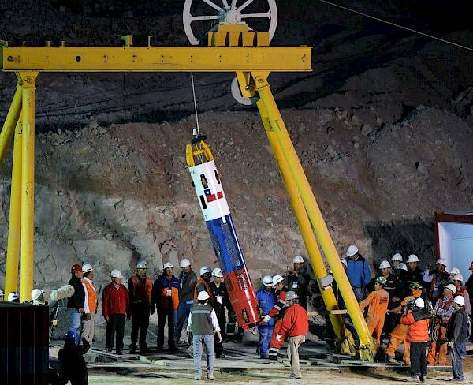

|

|
No dia 20 de abril de 2010, uma explosão provocou
a destruição da plataforma Deepwater Horizon, operada
pela petrolífera BP. Mais de 134 milhões de barris de
petróleo foram despejados no Golfo do México, cobrindo
uma área de mais de 2100 quilômetros, do Texas à Flórida.
A explosão matou 11 trabalhadores da plataforma, e o
petróleo causou a morte de milhões de peixes, aves,
tartarugas e mamíferos aquáticos. Nos meses seguintes
foram feitos esforços para retirar toda a poluição do
mar, mas hoje, mais de 10 anos após o acidente, seus
efeitos ainda são sentidos na região.
|
|
|
O principal problema é o impacto dessas substâncias
na vida marinha. Algumas têm efeito cancerígeno, e
outras têm reduzido as taxas de reprodução entre
espécies mais longevas, como golfinhos e outros peixes.
No caso dos golfinhos, pesquisas mostram que a taxa de
sucesso na gravidez é de cerca de 20%, enquanto em regiões
não afetadas pelo vazamento ela chega a mais de 83%.
|